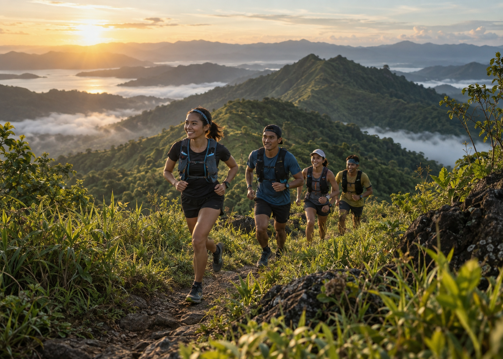

Five ways to introduce an organizer.
Each option uses the same generated 7:5 featured photograph and the existing Race Pace palette. The picture stays whole at every width. This concept image represents no real organizer or event.
Open spread
A magazine-style introduction. The photo and organizer name each get room without a surrounding card.

[TEST] Staging Scope QA Organizer
The clean canvas follows Airbnb’s photography-led analysis, translated into Trail Atlas colors and editorial type.
Gallery profile
The image becomes a single framed work. Identity sits below it like an exhibition caption.
[TEST] Staging Scope QA Organizer
0 upcoming events
The generous image and restrained labels adapt the photo-first principle in Nike’s design analysis.
Forest canopy
A dark green identity band leads. The photograph sits directly below at its full aspect ratio.
[TEST] Staging Scope QA Organizer
0 upcoming events
This uses the cinematic image hierarchy noted in Nike’s analysis, with Race Pace forest green in place of its monochrome system.
Atlas ledger
A compact identity rail creates a profile feel. The natural-size image owns the larger column.
[TEST] Staging Scope QA Organizer
Organizer profile
0 upcoming eventsThe quiet profile rail takes its spacing discipline from Notion’s warm minimal analysis.
Community header
The organizer name spans the page. The image then shares the next row with the first useful event state.
[TEST] Staging Scope QA Organizer
Upcoming events
No upcoming eventsCheck back for this organizer’s next race.
This keeps discovery and event context together, adapting Airbnb’s image-led organization to a race profile.